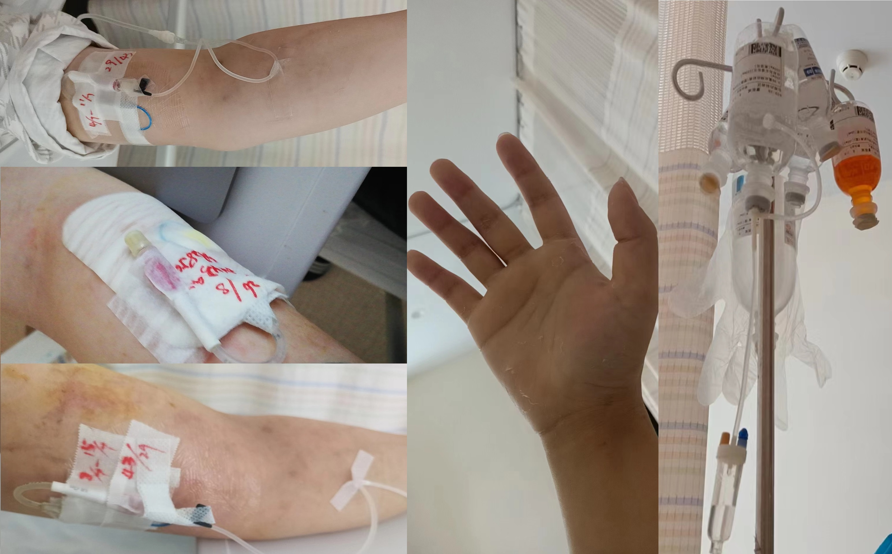
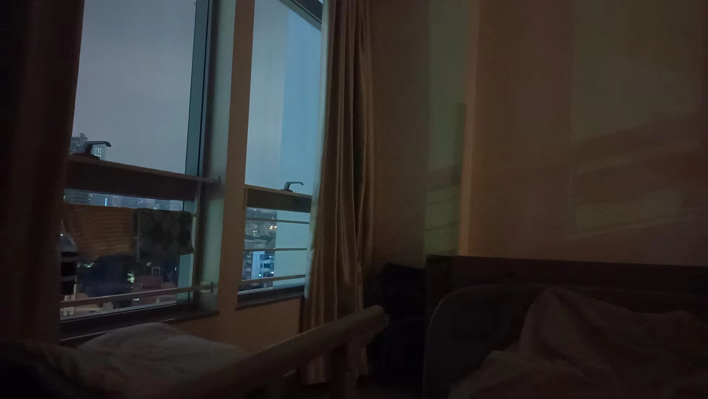
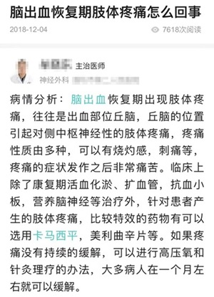

「听他们每个人的故事，都像在看自己，他们的震惊、痛苦、无助，以及反复在希望和绝望中徘徊摇摆的状态，都是我切身经历过以及正在经历的一部分」—— 蔡磊《相信》
我在前年因为突发性脑出血，没能及时送院，短短几小时内发展为言语不利、右半身偏瘫的危重症，送院后血小板已经降到接近 0，后来确诊为「急性早幼粒细胞白血病」导致的脑卒中，也就是俗称的「脑中风」。
今年有幸拜读了蔡磊先生的《相信》，我的临床病症和蔡磊先生后期的症状非常相像，看着他的故事、我感觉就像在看镜子，我能切身体会到他「最后一次创业」的千难万难、远不及书中文字中表露出来的万一 …
因融资困难，蔡先生开启了「破冰驿站」的直播间（收益全部用于药物管线研发）。这几天抽空去看了蔡磊先生，发现他的病情已经开始蔓延到口腔肌了，但是整个人看上去都是精神奕奕的，我绝对相信、「蔡磊先生是一个追光的人，所以他必将身披彩虹」。
借此契机，我也分享一下我患病后 “追光” 的故事，这段记忆的每个细节都萦绕在我脑海里、终生难忘 ——
1. 地狱
「渐冻症最残酷的，就是让人在清醒的状态下被锁死在这副 “冰冻” 的躯壳里。」—— 蔡磊《相信》
我可能是世界上最了解这种感受的人之一了。
我清楚记得，2021 年 6 月 5 日，刚过完 30 岁生日不到两周。
那天我躺在 ICU 里，医生下了病危通知书。
其实早在几天前，因为脑出血位置压着语言中枢，我已经开始出现失语症了 —— 就是明明能听懂别人说什么、也能看懂文字，但是偏偏无法用说出、或用笔、手机输出那个字。
在送去医院途中，我又因为两次颅内出血、导致右手右脚先后瘫痪，完全丧失了自主行动能力。
我除了能感受到身边的事物之外，完全无法和外界任何人沟通 ——
我曾是一个很自傲的人，桀骜不驯的狂傲。不信命、不信运、不信鬼神、不信轮回，甚至不怕死。
但是我现在成了废人，生活无法自理，吃喝拉撒都要人服侍，没有尊严地苟活，比杀了我还难受。
刚开始的几天，我不止一次想过自杀，但是我连自杀都无能为力，我才知道原来从生到死还有个过程 —— 叫「生不如死」。
无法表达自己内心的想法，每天反反复复醒了又睡、睡了又醒，因为大脑剧痛、像被两道闸门狠狠夹住一样的痛，有时后不知道是睡过去还是昏过去的。
随后左手臂被植入了一条 PICC 管，每天开始被安排的满满当当：
早上 6:00 抽一大堆血，然后 8:00 开始打点滴、一直到晚上 0:00，每天都要长时间泡在化疗药里面、以致于手臂已经被泡烂了 —— 三氧化二砷，俗称砒霜。
化疗的副作用很多，电视上看到掉头发只是轻的，全身蜕皮连指纹都没了（手机无法识别），颅内压降低导致持续的头疼
图片内容可能引起不适，请谨慎打开

每两周不是做骨穿、就是做腰穿，有时不幸遇到一个生手的医生、在麻药过后还要被生扎十几二十针 …
承受着巨大的麻痛在挑拨每一根神经，除了攥着拳头、咬紧牙关，别无他法。
这是地狱。
视频内容可能引起不适，请谨慎打开
2. 地狱的尽头
「然而，上到住院部 7 层，我才意识到自己感慨早了。这一层住的大多是运动神经元病患者。过道上一些患者在活动，有的人在家属搀扶下吃力地迈步，有的人全身瘫靠在轮椅上。透过开着的病房门，还能瞟到有人喉部插着一根管子，一动不动地躺在病床上。短短几步路，我脑子里闪过 4 个字：人间地狱。」—— 蔡磊《相信》
我就像是一个实验体，整天浑浑噩噩、忘了时间、忘了曾经的理想、忘了活着的意义。
眼泪早就哭干了。
但我骨子里就是一个很自傲的人，桀骜不驯的狂傲。
在治疗的过程中，心理层面开始发生了很微妙的化学反应：从一开始的想干脆的死、到所有人都不让我死、到我觉得我自己不能就这样死了 ——
不信命、不信运、不信鬼神、不信轮回，甚至到现在，不怕死。
我已经看到过走马灯了，死也不过如此。
… …
我开始能慢慢地能断断续续的说几个字，医生说是我的脑出血开始有被吸收的迹象了。
好像抓住了一丝希望。
我试图调整自己的心态，于是我让父母找来了手机和耳机 —— 我把《黄子华栋笃笑》的整个系列重新听了一遍。
在血液科住院部 9 楼，大部分都是行将就木的老人，每天听得最多的就是病人和家属的呻吟哀嚎，长期浸淫在这种环境下，每个人精神都快崩溃了。
但从那天开始，整一层楼回荡出格格不入的哈哈大笑。
医生以为我疯了，给我找了个精神科医生，说我有抑郁症。
我那时心想，我又说不了话，你就看了两眼说我有抑郁症，怪不得这年头那么多人被诊治为精神病，不就医生一句话的事。
精神药物我一颗没吃，依旧笑声不断。慢慢地护士们都开始寻着笑声来找我聊天，以至于我最后竟然认识了整个血液科护士站的护士。
插一则轶事，因为护士上班都戴着口罩，我其实并不真正地 “认识” 她们。其中有个藏族的小护士倒是有趣，刚来实习，而且名字有 8 个字特别长，她一来我就一个字一个字地念她的名字，但是总是念错。我就和她约定，只要有一天我能准确念出她的名字，她就把口罩摘了让我一睹芳容。
随性而为的苦中作乐罢了。
我不知道地狱有没有尽头，但如果有，这样不经意的小目标就是路标 —— 既然死不了，那我爬也要爬出去。
3. 黑夜中的一束光
「为什么是我 …… 一连串的 “为什么” “凭什么” “怎么办” 旋转着涌入一个没有尽头的隧道，我被推搡着一直往前却一直走不出去。等终于看到前方一个亮点，像是隧道出口。」—— 蔡磊《相信》
我从小到大几乎都不去医院，感冒发烧全靠扛，扛一周就好了。
小病痊愈靠体魄，但是大病康复，靠的是信念，一股求生的信念。
自我进院以来，医生采取的都是保守疗法，更多的是给予我希望：
「你很厉害啊，听你爸爸妈妈说，你在 xx 公司工作 ？去年武汉疫情的时候，你们公司帮了我们很多，现在我们也会全力帮你的，我不会让你死的。」
「我们院之前来了一个小伙子，症状和你差不多，现在已经痊愈了，还把我们的小护士骗走了，现在已经结婚生子咯。」
… …
但是后来据我所知，在我之前、协和医院「因急性白血病导致脑出血」痊愈的病例、一例都没有，我的案例还被医院制作成典型的临床教材。
当时没有人能帮我，能帮我的只有我自己，所以医生才不断地给我灌输各种希望、即使是假的，他们也要说成真的。因为他们很清楚，一旦我信念崩塌，人就没了。
但我只是废了，不是傻了，我自己的情况，大概也能判断出来。
接受现实之后，就只能脚踏实地，务虚不是我本格。即使是爬，也要爬得有尊严！想想我还有什么，我以后还能用它来做什么 ？！
我还有左手和左脚，我还能清晰的思考！我还是一个能创世的程序员！只要给我一台电脑，我就能做到别人做不到的事情！
而当下最急迫要解决的问题，就是让别人能理解我想表达什么！
… …
一个大胆而荒谬的念头在我脑中逐步形成 —— 脑机接口！我要自己做一个脑机接口！
但是当时的脑机接口还不成熟，虽然可以通过在大脑表层下植入电极获取脑波信号，但是解码的准确性却存在不少问题。
2021 年，AI 开始渐露头角： 当时 DALL-E 绘画风靡一时、OpenPose 在游戏中出圈也是风头无两。
如果想要解决脑波解码的问题，最好的方案，就是 AI !
我并非人工智能专业出身，对于 AI 可以说是零基础，但是我现在有的是时间。
学！
我的左手在那段时间挺忙的，一边做化疗的同时，一边还要查阅 AI 相关的资料。
刚开始没有老师带、没有资源，我连自己不会什么、应该从哪里学起、怎么学都不知道。
但也不是毫无办法，用别人分享的 AI 应用作为切入点，从实际应用出发、抽丝剥茧、总能回归本源。
… …
一天夜里，看资料看得睡着了，我做了一个梦，梦见我身体被黑雾笼罩、唯独右手在拿着鼠标按。
其实在这差不多一个月的时间，我几乎每天都在努力地想让我的右手右脚动起来，甚至于我只要一有这样的念头脑部就会剧痛，但有些事不是单凭想就能做到的。
医生诊断说我左脑的运动中枢因为被出血长时间压住，部分神经已经缺氧坏死了，导致信号到达不了肢体，测试肌力为 0，基本宣判了死刑。
但这天夜里，魂牵梦萦之下，我惊醒了。梦好真实。
我和梦里一样，忍着头疼、尝试去动我的食指。
动了 … 虽然只有一点，但是，它动了！
2021 年 6 月 26 日深夜 22 点，我眼里，久违地出现了光。

4. 你相信光吗
「我们仅仅是比别人提前看到了人生终点，知道终点在什么地方。为什么不趁着有限的时间，多做一点自己喜欢的事呢。」—— 蔡磊《相信》
在生物学上，成人的中枢神经系统中的神经细胞如果一旦损伤就无法再生或修复。
医生说，我之所以能动，是因为其他神经细胞正在代偿已经坏死的细胞的功能，正在进行重塑。而复健可以加快功能重塑的速度。
但是重塑神经细胞的过程非常痛苦，期间皮肤痛觉变得异常敏感，轻轻一碰就会像被雷劈一样，堪比刮骨剜心，任何止痛药都无效。

但即便如此，我每天也坚持和儿时一样，重新学习动手指、拿碗筷、写字、剪指甲，学着坐起来、站起来，学着颤颤巍巍地走路。
能自己做的，就绝不假手于人，我要把丢失的尊严捡回来。
痛得睡不着，我就看 AI 的学习材料，转移注意力。
我不知道我能恢复到多少，甚至理工科的思维让我考虑到最坏的情况是恶化前的回光返照，所以我必须趁着还有机会为未来的自己做好准备。
我和蔡磊先生的遭遇极其相像，但是其实在这里已经出现了分歧 ——
可能是因为位置决定眼界、眼界决定格局；也有可能是因为其他。孔子有云：三十而立，四十不惑，五十知天命，六十而耳顺，七十而从心所欲。
也许如果我在不惑之年遇到这种事，也会像蔡磊先生一样、愿意换位思考，为救世人尽一番绵力。但是我现在的心境比较务实，由始至终想的都是怎么自救。
我前面也提了不止一次，我是一个自傲甚至于狂傲的人，我从来不相信会有人踏着七色彩虹来拯救自己，关键时候能相信的只有自己。
所以如果有人问我：「你相信光吗？」
我的答案是：「从来都不信。但是我相信我可以为自己带来光。」
5. 初心
「在我心中，这个希望是万分之一和百分之一甚至十分之一，都是一样的，我都会付出百分之百的努力，也没有考虑过这个希望的大小。没有这个 “一”，也要去创造 “一”。我就是这么想的。」—— 蔡磊《相信》
三个月后，我通过复健断断续续恢复了身体百分之七八十的技能，虽然还有点小毛病，但是我还是带着我的 AI 作品出院了 —— 《人体姿态识别》是我在病床上做出来的第一个 AI 。
出院之后，我感觉重获新生，因为这是从死神手里抢回来的第二人生。
我开始感觉到自己想做的很多东西还没做、越发觉得时间不够用。有朝一日我始终还会像这次一样毫无征兆地倒下，所以我要尽可能去做自己喜欢的事情，只求到时不留遗憾。
到现在离我出院已经两年多了，我的生活早已回归平凡，但是这两年我还在坚持在空余时间学习 AI 知识：《人脸识别》、《AIGC》、还有最近开始研究的 GYM 强化学习模型。
而蔡先生也在坚持他的抗争之路，意料之中的是他还是没能感动资本。不过他没错、资本也没错，错在这个世界规则的本质就是逐利的。
后世会怎么评论蔡先生，我大概可以预言一下：如果最终药物研发成功，蔡先生就是明知不可为而为之，有舍己为人的大爱；如果研发失败，蔡先生就是明知不可为而不懂止损，给了一堆人希望又亲手把他们推到绝望之中。
无论结果怎样，都是随人们去说，但是说了又会怎样呢？不外乎都是一帮不理解我们的人而已。
乍一看我们走在了两条截然不同的路，但好像又殊途同归 —— 我们都在坚持做内心最想做的东西。
我们既不是「明知不可为而为之」，也不是「明知不可为而不懂止损」，从做这件事情开始，我们压根就没有考虑过「可行性」，又哪来的「不可为」。
在社会工作久了，什么事情都要解释「可行性」、要解释 ROI，什么都只看结果、看收益。
但是遇上自己想做的、愿意为之付出百分百的事，出发点从来都不是看可行性的。
初心，只有喜欢、不喜欢。
初心，就像年少逐梦，毋须理由、纯爱发电。
过程很难、难到没有人会关注，大部分人都只是在观望结果，历史只会记住成功的人，更多的人只能被选择性遗忘。
但那又如何？
每个人的路，贵在坚持、冷暖自知，无关乎别人，自己喜欢、便可。
6. 后记
2023 年是 AI 元年，各种 AI 应用如雨后春笋般涌现，其中脑机接口、早在前几个月就已经取得了突破：《中风瘫痪 18 年，AI 让她再次「开口说话」》—— 我始终还是慢了一步，但我学习 AI 的初心并无半分动摇。
顺便再提一嘴，这篇读后感原本的名字叫《初心》，因为大部分内容节选自我正在写的新书。
但转念一想，新书还未发版、避免重名，又改成了《我曾是少年》。
这里有一层因缘是，看完《相信》后、勾起了当年生病的经历，心态有点崩；但冥冥中、可能真的有命运，在我最需要治愈的时候、让我遇到了这首歌 … …
封面是用 AI 根据这首歌想表达的意境画的 —— 当我和世界初相见，当我，曾经是少年。
致每一个还在逐梦的少年。